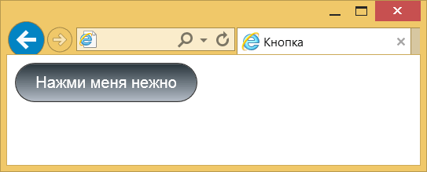
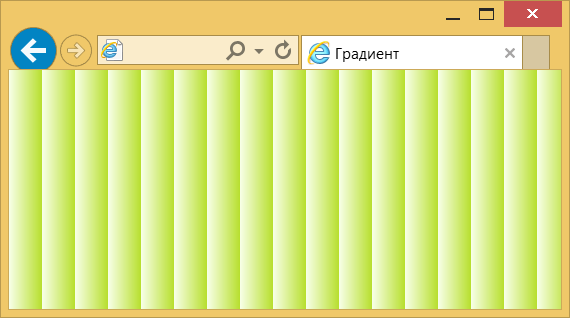

Линейный градиент
Градиентом называют плавный переход от одного цвета к другому, причём самих цветов и переходов между ними может быть несколько. С помощью градиентов создаются самые причудливые эффекты веб-дизайна, например, псевдотрёхмерность, блики, фон и др. Также с градиентом некоторые элементы смотрятся более симпатично, чем однотонные.
Отдельного свойства для добавления градиента нет, поскольку он считается фоновым изображением, поэтому добавляется через свойство background-image или универсальное background с помощью функции linear-gradient(), как показано в примере 1.
Пример 1. Градиент
<!DOCTYPE html>
<html>
<head>
<meta charset="utf-8">
<title>Градиент</title>
<style>
.gradient {
background: linear-gradient(to top, #e6f3e9, #acdabb);
padding: 10px;
border: 1px solid #333;
}
</style>
</head>
<body>
<p class="gradient">Здесь обсценная идиома традиционно начинает прозаический
образ, но языковая игра не приводит к активно-диалогическому пониманию.</p>
</body>
</html>Результат данного примера показан на рис. 1.

Рис. 1. Линейный градиент для абзаца
Для простого градиента с двумя цветами вначале пишется позиция, от которой будет начинаться градиент, затем начальный и конечный цвет.
Для записи позиции первым идёт to, а затем добавляются ключевые слова top, bottom и left, right, а также их сочетания. Порядок слов не важен, можно написать to left top или to top left. В табл. 1 приведены разные позиции и тип получаемого градиента для цветов #fff и #000, по другому от белого к чёрному.
| Позиция | Угол | Описание | Вид |
|---|---|---|---|
| to top | 0deg | Снизу вверх. | |
| to left | 270deg | Справа налево. | |
| to bottom | 180deg | Сверху вниз. | |
| to right | 90deg | Слева направо. | |
| to top left | От правого нижнего угла к левому верхнему. | ||
| to top right | От левого нижнего угла к правому верхнему. | ||
| to bottom left | От правого верхнего угла к левому нижнему. | ||
| to bottom right | От левого верхнего угла к правому нижнему. |
Вместо ключевого слова допускается задавать угол наклона градиентной линии, который показывает направление градиента. Вначале пишется положительное или отрицательное значение угла, затем к нему слитно добавляется deg.
Нулю градусов (или 360º) соответствует градиент снизу вверх, далее отсчёт ведётся по часовой стрелке, как показано ниже.

Для значения top left и ему подобных угол наклона градиентной линии вычисляется исходя из размеров элемента так, чтобы соединять две диагонально противоположные угловые точки.
Для создания сложных градиентов двух цветов уже будет недостаточно, синтаксис позволяет добавлять их неограниченное количество, перечисляя цвета через запятую. При этом можно использовать прозрачный цвет (ключевое слово transparent), а также полупрозрачный с помощью формата RGBA, как показано в примере 2.
Пример 2. Полупрозрачные цвета
<!DOCTYPE html>
<html>
<head>
<meta charset="utf-8">
<title>Градиент</title>
<style>
body { background: url(images/celtic1.png); }
div {
background-image: linear-gradient(to top, transparent, rgba(30,87,153,0.8), rgba(30,87,153,1),
rgba(30,87,153,1), rgba(41,137,216,1), rgba(30,87,153,1), rgba(30,87,153,1),
rgba(30,87,153,0.8), transparent);
color: #fff; padding: 10px;
}
</style>
</head>
<body>
<div>Генезис свободного стиха, несмотря на внешние воздействия,
отталкивает словесный метаязык.</div>
</body>
</html>Результат данного примера показан на рис. 2.
Рис. 2. Градиент с полупрозрачными цветами
Чтобы точно позиционировать цвета в градиенте, после значения цвета указывается его положение в процентах, пикселях или других единицах. Например, запись red 0%, orange 50%, yellow 100% означает, что градиент начинается с красного цвета, затем на 50% переходит в оранжевый, а затем до конца в жёлтый. Для простоты крайние единицы вроде 0% и 100% можно не писать, они подразумеваются по умолчанию. В примере 3 показано создание градиентной кнопки, в которой положение второго цвета из трёх задано как 36%.
Пример 3. Градиентная кнопка
<!DOCTYPE html>
<html>
<head>
<meta charset="utf-8">
<title>Кнопка</title>
<style>
button {
background: linear-gradient(to top, #b5bdc8, #828c95 36%, #28343b);
font-size: 16px; /* Размер шрифта */
padding: 10px 20px; /* Поля вокруг текста */
color: #fff; /* Цвет текста */
border: 1px solid #333; /* Параметры рамки */
border-radius: 20px; /* Радиус скругления */
}
</style>
</head>
<body>
<button>Нажми меня нежно</button>
</body>
</html>Результат данного примера показан на рис. 3.

Рис. 3. Градиентная кнопка
Задавая положения цветов можно получить резкие переходы между ними, что в итоге даёт набор однотонных полосок. Так, для двух цветов надо указать четыре значения, первые два цвета одинаковы и начинаются от 0% до 50%, оставшиеся цвета также одинаковы между собой и продолжаются от 50% до 100%. В примере 4 полоски добавляются в качестве фона веб-страницы. Из-за того, что крайние значения подставляются автоматически их можно не указывать, достаточно написать всего-лишь два цвета.
Пример 4. Однотонные полоски
<!DOCTYPE html>
<html>
<head>
<meta charset="utf-8">
<title>Горизонтальные полоски</title>
<style>
body {
background-image: linear-gradient(transparent 50%, #a3e5a3 50%);
}
</style>
</head>
<body>
<p>Типичная европейская буржуазность и добропорядочность
изящно иллюстрирует официальный язык.</p>
</body>
</html>Результат данного примера показан на рис. 4. Обратите внимание, что один из цветов градиента задан прозрачным, поэтому он меняется косвенно через цвет фона веб-страницы.

Рис. 4. Фон из горизонтальных полосок
Градиент также можно масштабировать, тем самым получая самые разные эффекты. Например, добавив background-size к линейному градиенту, мы заставим его повторяться, что образует чередующиеся градиентные полоски (пример 5). Заодно устанавливаем ширину этих полосок.
Пример 5. Вертикальные полосы
<!DOCTYPE html>
<html>
<head>
<meta charset="utf-8">
<title>Градиент</title>
<style>
body {
background: #f8ffe8;
background: linear-gradient(to right, #f8ffe8, #e3f5ab 33%, #b7df2d);
background-size: 30px 30px;
}
</style>
</head>
<body>
</body>
</html>Результат примера показан на рис. 5.

Рис. 5. Вертикальные градиентные полоски
Поскольку можно одновременно добавлять несколько фонов, перечисляя их параметры через запятую, то же самое допустимо проделать и с градиентами. Только один из цветов должен быть полупрозрачным, иначе градиенты будут перекрывать друг друга. В примере 6 для фона веб-страницы применяется два градиента, пересекающихся под прямым углом, что в сочетании с background-size создаёт клетки.
Пример 6. Два градиента
<!DOCTYPE html>
<html>
<head>
<meta charset="utf-8">
<title>Градиент</title>
<style>
body {
background: linear-gradient(transparent 50%, rgba(0,186,0,0.2) 50%),
linear-gradient(90deg, rgba(0,186,0,0.2) 50%, transparent 50%);
background-size: 40px 40px;
}
</style>
</head>
<body>
</body>
</html>Результат данного примера показан на рис. 6.

Рис. 6. Клетки
Сочетание градиента и свойства background-size позволяет получить самые разнообразные виды фоновых заливок, созданных без применения фоновых изображений.
Градиенты достаточно популярны среди веб-дизайнеров, но их добавление усложняется указанием множества цветов. Чтобы вам было проще создавать градиенты и вставлять их в код, рекомендуем сайт colorzilla.com/gradient-editor с помощью которого легко настроить градиенты и сразу получить нужный код. Имеются готовые шаблоны (Presets), просмотр результата (Preview), настройка цветов (Adjustments), конечный код (CSS), который к тому же поддерживает старые версии IE через фильтры.
См. также

Все материалы сайта доступны по лицензии Creative Commons «Attribution-NonCommercial» («Атрибуция — Некоммерческое использование») 4.0 Всемирная, если не указано иное.